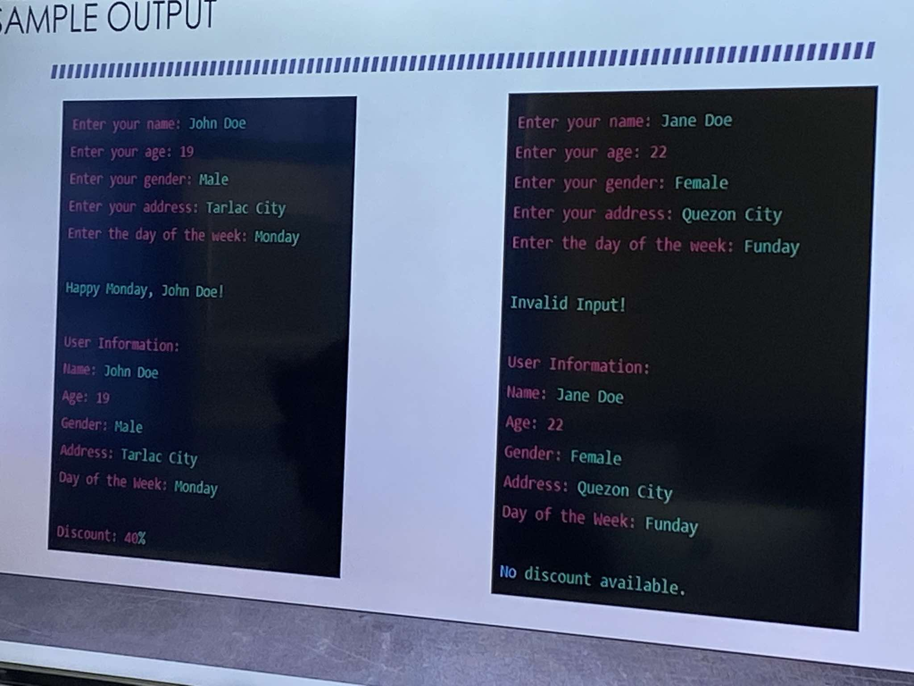
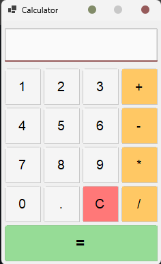

About Me
i'm a computer science student at tarlac state university. i like figuring out how things work and building tools that actually make sense to the people using them or just me trying to solve my own problem.
before and during college, i worked in customer service, which taught me a lot about listening and explaining things clearly, even when the pressure's on. i carry that into how i approach code too. i'd rather take the time to understand a problem properly than rush a fix that won't hold up.
Education
BS Computer Science
Tarlac State University
High School Diploma
Jose V. Yap National High School
Tarlac City, Philippines
Core Skills
Technical Arsenal
Digital Tools, Programming Logic, Data Management,
Systems Servicing, Web Development
Soft Skills Matrix
Communication, Problem Solving, Time Management, Adaptability
School Projects
MediSched
A clinic administration project focused on managing
clinic-related information and services.
View on GitHub

Users-info
A Java program that collects user information,
checks the day of the week, and calculates a discount
based on age and address.
View on GitHub

Calculator
A simple VB.NET calculator project.
View on GitHub
Current Research Papers
Yumul, C. B. (2024–Present).
Autonomous Vehicle Navigation Through Reinforced Progressive Learning.
Independent Research Repository. (Work in Progress).
Yumul, C. B. (2025–Present).
Cognitive Kinodynamic Interception of Trajectories in Arbitrary Environments.
Independent Engineering Project. (Work in Progress).
Certifications
EFSET C2
English Proficiency — Proficient Level
NCII CSS
Systems Servicing — Certified 2024
Xero Advisor
Business — Certified 2025
Lean Six Sigma
Process Improvement — White Belt, 2025
CCNA Certificate
Networking — Cisco Certified, 2025
Work Experience
Customer Service Associate
Foundever
Hacienda Luisita, Tarlac City, Philippines
Applied clear communication and problem-solving skills to deliver consistent support and positive client interactions.